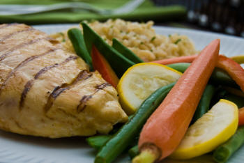
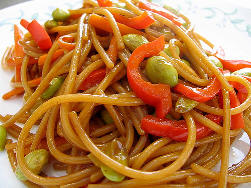

Become a Family Meal Planning Professional: Simple Tips for Busy Moms

{Photo by Kieshawn28}
Does the idea of "family meal planning" overwhelm you? This important part of managing your home isn't reserved for Super Moms and Organizing
Queens. You can organize your meals in just a
few minutes a month.
Find serenity in the kitchen through budget meal planning.
No more 6:00 pm panic. The simple act of having
a plan will transform your family's meals and provide peace in your home.
Not only will you eat healthier, but by practicing family
meal planning, you will cut your dining-out costs in half. (And who can't use that extra money these days?)
Did you know that practicing family meal planning even benefits your infant? Here's how:
You know the saying, "When Mama ain't happy, ain't nobody happy"? That's especially true in regard to your infant. Newborns
are particularly in-tune with your emotions. If you're stressed and frustrated every night at dinnertime, your baby will reflect that.
When you plan ahead you can identify ways to include your baby in your family meals. If your baby is older than 7
months, she can start finger-feeding some of the food the rest of the family is eating.
By finding baby-edible food in the midst of your own dinner, you take steps to avoid the "make me my own meal" picky eaters later on. Rice, diced
overcooked veggies, mushy bananas...you can take almost anything from your menu and turn it into "baby food" by mashing, pureeing, or
overcooking in the microwave.
The key to including your infant in family meals is foresight. By doing your family meal planning ahead of time, you can research and discover foods within your regular recipes
that can be adapted to feed your baby at the same time. I rely on Super Baby Food to tell me what foods are safe for my growing infant. See my review of
Super Baby Food here.
Eating out too often can lead to poor-health choices for your baby. Grabbing a bottle of baby food for the restaurant is fine once
in a while, but doing that several times a week is hard on your budget and not good for your baby.
You can save a ton of money, and provide
better nutrition, by making your own baby food. It's not that hard and will save you a bundle. (I've done
it for all my babies.) Click here to see my favorite baby food books.
Setting Up Your Meal Planning Calendar
Before you choose one of these easy methods, you'll need to figure out how many meals a week you need to make. For example, for my small family,
I only need to cook 3-4 meals a week.
My husband and I are eating most of the food, since my girls are still small, so I know that a single
meal can easily turn into leftovers for the next night's dinner.
Take a moment to look at your weekly schedule. What are the evenings you'll be gone? Which are the nights you need to prepare a meal? Having that
on paper is the first step towards stress-free family meal planning.
Once you've done that, it will be time to choose your plan.
The No-Suprise Family Meal Plan
{Photo by Darwin Bell}
The first method of family meal planning on a budget is to choose your family's favorite meals and rotate them every week. Tuesdays are always
spaghetti, Fridays are always tacos, Sundays are pizza, etc.
This method is best for moms who hate being in the kitchen and absolutely do not want to have to think about meals.
Type up a standard grocery list, and you've reduced family meal planning and grocery-list-making to a mere 5 minutes a month.
I cannot do a meal plan like this. I get bored too easily. I need excitement in my meals. The prospect of cooking the same thing, week-in and
week-out, is dismal and unmotivating to me. I would probably eat out more if I chose this plan!
If you're like me, and need more variety, keep reading...
Side Note: Don't forget your breakfast and lunches! Although I love variety for dinners, to simplify
lunches, the kids have the same thing every Monday, Tuesday, Wednesday, etc. They like the structure, and I like not having to "think" about lunches.
Don't have older kids? If your baby is on solids, this method is still a good idea. A regular rotation will help your
baby learn to like his peas and carrots!
The Variety Meal Plan

{Photo by Jen, Glossy Veneer}
If the "standard" meal plan is too boring, you can "kick it up a notch" without having to add hours of preparation time.
Simply change a few phrases, and you've got a whole new (exciting) plan to fill out.
In place of the "Tuesdays are always spaghetti" option, make the phrase "Tuesdays
are always Italian", "Wednesdays are always chicken", "Fridays are always Mexican", etc. for all the evenings you need a meal on the table.
At the beginning of the month, list out all the recipes you'll need that month (4 Italian, 4 Chicken, 4 Mexican, etc.) and fill in your recipes.
(A recipe-organizing software program makes this process incredibly easy.)
When the week arrives, all you need to do is look at your meal plan for the week and write out your grocery list. S-I-M-P-L-E, simple.
The Someone-Else-Does-It Meal Plan
If you want variety in your meal plan, but the idea of developing your own meal plan still gives you cold sweats, I recommend the
make-someone-else-do-it plan.
Besides being colorful and pretty to look at (I know, I'm such a girl...), the plan was actually helpful.
(Can you imagine? No meal planning for over 3 months...sigh...)
Ruth's system is creative, unique, and centered around 4 simple steps.
Look at your menu meal list for the week (which she provides)
Look over your grocery list for the week (which she provides)
Shop at home first by looking at the list and putting items you have into a pantry box for the week.
Take the list she provides (minus the items in your pantry box) and go shopping!
Her recipes are not your cream-of-mushroom variety. They are fresh, delicious, and easy to make. (3-step Vietnamese Chicken, or 2-step Greek Lamb with
Couscous, etc.). Under each dinner recipe are suggestions for grains and vegetables you can add to round out the meal.
The website is subscription based, so you choose whether you'd like a weekly, monthly, or yearly plan. If your family has special dietary restrictions,
gluten-free, diabetes, or just low-fat, the system is super-click easy.
When it comes to family meal planning, there is one tool I use constantly. It's my meal planing software program.
The days of finger-flipping through endless recipe cards is over. The 21st Century gives us instant-searches and automatic grocery lists.
There are two particular pieces of meal planning software that are worth recommending. Which you choose depends on what kind of planning you are wanting to
do.
Cook'n Family Meal Planning Software
If you're looking for a standard organizational family meal planning software, Cook'n is the perfect tool. It organizes all your recipes, gives
you new ones, and makes finding a specific recipe, or searching for ingredients, incredibly easy.
My favorite part? No hand-cramps when friends ask for recipes! I just hit "print". Naturally, nothing's perfect. However, Cook'n is pretty darn
close.
Meal planning can be an excellent tool in helping you get back to your pre-pregnancy weight. The Meal Plans 101 software is designed
to help you automate that process as much as possible.
This neat software will take the guess work out of your calorie consumption and create healthy meal plans that will help you meet your weight goal.
Budget meal planning becomes especially important after the arrival of a new baby. This little person has a whole new sets of needs. He will need things
that cost money (diapers, creams, doctor visits, etc.) and he will need things that take away your time (feeding, changing, holding, etc.).
So the laundry takes a little longer to get done. So the living room is a little dustier than usual. Those are things we can live with. But
mealtimes? Those come at the same rate they always have...three times a day.
You know they're coming, so do yourself a favor and prepare for them. Use these simple family meal planning tips to
create calm, healthy dinners for your growing family.
Side Note: Another way to save money every month (besides smart family meal planning) is frugal grocery shopping.
I learned how to get many items for free. If you're looking for tips
on how to drastically reduce your monthly grocery bill, read about how I learned to power shop.
ADD TO YOUR SOCIAL BOOKMARKS:BlinkDel.icio.usDigg FurlGoogleSimpySpurlTechnoratiY! MyWeb